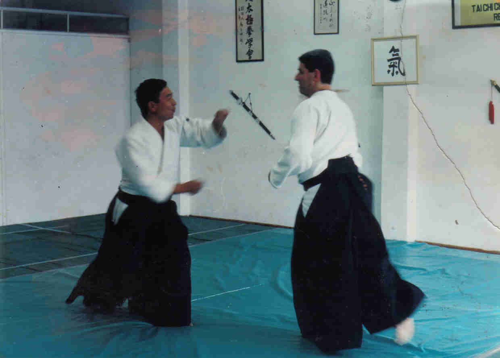

| INICIO | CLASES | TÉCNICAS | VIDEOS | SALUD | SEMINARIO | ORGANIZACIONES | HISTORIA | TEXTOS | BIBLIOGRAFÍA | LINKS | CONTACTO |
Profesor Norberto Kiman

Profesor Norberto Kiman
Nacido en Buenos Aires, Argentina en 1961.
Es graduado en Sistemas en la Universidad Tecnològica Nacional.
Practica Ki Aikido desde el año 1991.
Es 3er dan de Ki Aikido en la Ki No Kenkyukai Association Internationale.
Es discípulo de Doshu Kenjiro Yoshigasaki habiendo participado de sus seminarios entre los años 1993 y 2002.
Es discípulo de Sensei Ruglioni Giuseppe habiendo participado de sus seminarios desde el año 2003 hasta la fecha.
Dicta clases de Ki Aikido en la Facultad de Ciencias Exactas y Naturales de la Universidad de Buenos Aires desde 1999, y en otras instituciones.
Otros datos:
Practicó Tai Chi Chuan desde 1986 a 1990 con el maestro Wang Tsing.
Practica Yoga desde 1994.
Es Instructor Nacional de Yoga.